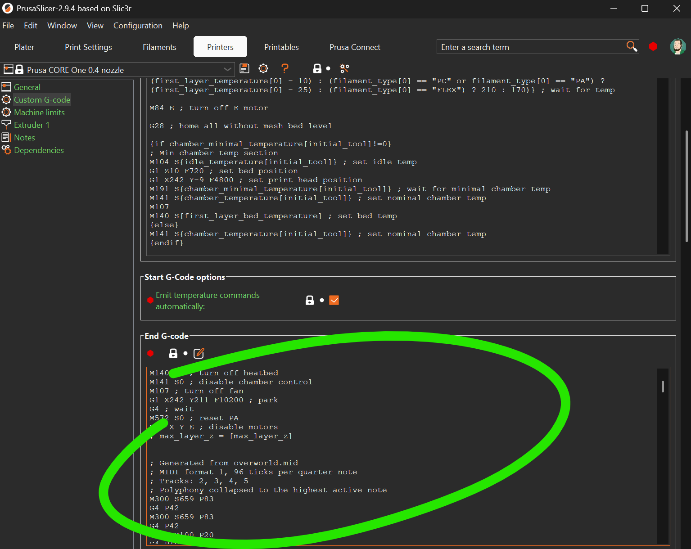

Make your printer sing.
G-code from MIDI
This page converts a MIDI file into M300 commands. You can preview and polish
your G-code right here. Save it as a .gcode file, or copy the result and
paste it into the "Custom G-code" section of your printer profile in your slicer.
Upload MIDI
You can find tons of MIDI files online, along with free editors.
No MIDI loaded. Upload a .mid file to convert it into playable G-code.
MIDI Tracks
Choose which MIDI tracks should be converted into beep G-code.
Log
Output
Laptop speakers
Audio
Ready
Playback
Idle
Ready.
How to use
Just send the resulting G-code to your printer, or add it as 'End G-code' in your printer profile to play a tune when the job is done.

How it works
M300 S880 P200plays an 880 Hz tone for 200 ms.G4 P150inserts a 150 ms pause between notes.- MIDI import shows instrument-style track names, then turns notes into
M300and gaps intoG4. - The speed slider rewrites
M300 P...andG4timing in the editor. Stopcuts playback immediately and silences any active tone.- Other G-code lines are ignored and noted in the log.
- Chord-heavy MIDI is flattened to one melody line by keeping the highest active note.